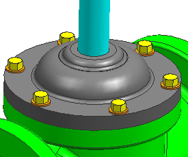

创建实例特征阵列
-
将角色更改为具有完整菜单的高级功能。
-
在装配工具条的组件下拉菜单中，选择创建组件阵列
 。
。 -
选择 des02_hex_bolt and des02_washer。
-
点击确定。
-
在创建组件阵列对话框的阵列定义下方，确保选择的是从阵列特征。
-
在组件阵列名输入框中，键入 yoke_hardware 并回车。
生成了一个基于阀轭上孔实例设置的垫圈和六角螺栓的组件阵列。
为了包含特征实例关系并创建阵列，在您创建接触对齐→自动判断中心/轴约束时，您必须选择 des02_valve_yoke 上孔的中心线。
